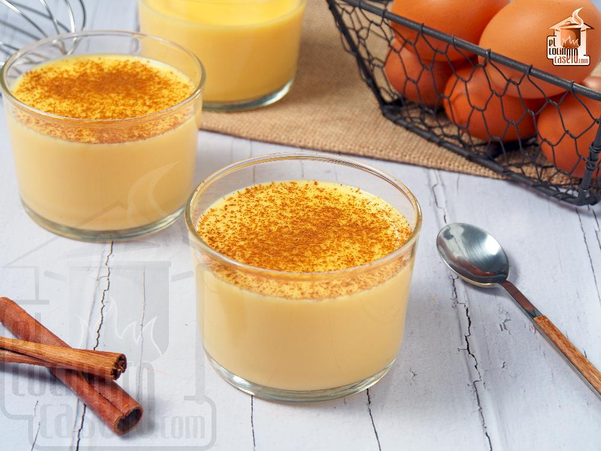

Natillas

Description
Dessert known in english as custard. Thickened and sweetened egg and milk
mixture.
Ingredients
- Eggs
- Milk
- Cinnamon
- Sugar
- Vanilla extract
- Corn starch
Steps
- Mix the eggs, sugar, corn starch and vanilla extract together.
- Heat the milk but don't let it simmer
-
Add a little of the milk to the eggs and wisk it together to warm the
eggs
- Add the eggs to the milk and wisk until thickened
- Let it cool and put some ground cinnamon on top.